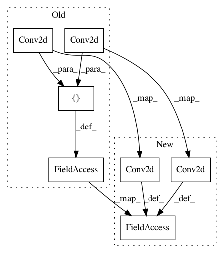

6ccde104316865fe94180c1f7b2c40333cb3113e,hyperpose/Model/openpose/model/openpose.py,Init_stage,__init__,#Init_stage#Any#Any#Any#Any#,139
Before Change
self.n_pafmaps=n_pafmaps
self.in_channels=in_channels
self.data_format=data_format
self.conf_block=layers.LayerList([
Conv2d(n_filter=128,in_channels=self.in_channels,filter_size=(3,3),strides=(1,1),padding="SAME",act=tf.nn.relu,W_init=initial_w,b_init=initial_b,data_format=self.data_format),
Conv2d(n_filter=128,in_channels=128,filter_size=(3,3),strides=(1,1),padding="SAME",act=tf.nn.relu,W_init=initial_w,b_init=initial_b,data_format=self.data_format),
Conv2d(n_filter=128,in_channels=128,filter_size=(3,3),strides=(1,1),padding="SAME",act=tf.nn.relu,W_init=initial_w,b_init=initial_b,data_format=self.data_format),
Conv2d(n_filter=512,in_channels=128,filter_size=(1,1),strides=(1,1),padding="SAME",act=tf.nn.relu,W_init=initial_w,b_init=initial_b,data_format=self.data_format),
Conv2d(n_filter=self.n_confmaps,in_channels=512,filter_size=(1,1),strides=(1,1),padding="SAME",act=tf.nn.relu,W_init=initial_w,b_init=initial_b,data_format=self.data_format)
])
self.paf_block=layers.LayerList([
Conv2d(n_filter=128,in_channels=self.in_channels,filter_size=(3,3),strides=(1,1),padding="SAME",act=tf.nn.relu,W_init=initial_w,b_init=initial_b,data_format=self.data_format),
Conv2d(n_filter=128,in_channels=128,filter_size=(3,3),strides=(1,1),padding="SAME",act=tf.nn.relu,W_init=initial_w,b_init=initial_b,data_format=self.data_format),
After Change
self.n_pafmaps=n_pafmaps
self.in_channels=in_channels
self.data_format=data_format
self.conf_block=layers.LayerList([
Conv2d(n_filter=128,in_channels=self.in_channels,filter_size=(3,3),strides=(1,1),padding="SAME",act=None,W_init=initial_w,b_init=initial_b,data_format=self.data_format),
tl.layers.PRelu(in_channels=128),
Conv2d(n_filter=128,in_channels=128,filter_size=(3,3),strides=(1,1),padding="SAME",act=None,W_init=initial_w,b_init=initial_b,data_format=self.data_format),
tl.layers.PRelu(in_channels=128),
Conv2d(n_filter=128,in_channels=128,filter_size=(3,3),strides=(1,1),padding="SAME",act=None,W_init=initial_w,b_init=initial_b,data_format=self.data_format),
tl.layers.PRelu(in_channels=128),
Conv2d(n_filter=512,in_channels=128,filter_size=(1,1),strides=(1,1),padding="SAME",act=None,W_init=initial_w,b_init=initial_b,data_format=self.data_format),
tl.layers.PRelu(in_channels=512),
Conv2d(n_filter=self.n_confmaps,in_channels=512,filter_size=(1,1),strides=(1,1),padding="SAME",act=None,W_init=initial_w,b_init=initial_b,data_format=self.data_format),
tl.layers.PRelu(in_channels=self.n_confmaps)
])
self.paf_block=layers.LayerList([
In pattern: SUPERPATTERN
Frequency: 3
Non-data size: 7
Instances
Project Name: tensorlayer/openpose-plus
Commit Name: 6ccde104316865fe94180c1f7b2c40333cb3113e
Time: 2020-09-16
Author: 46805564+Gyx-One@users.noreply.github.com
File Name: hyperpose/Model/openpose/model/openpose.py
Class Name: Init_stage
Method Name: __init__
Project Name: eriklindernoren/PyTorch-GAN
Commit Name: 570cd4f66bdf9c3e4b4bb8fbc31fa24b0bd7cdbd
Time: 2018-04-22
Author: eriklindernoren@live.se
File Name: implementations/cgan/cgan.py
Class Name: Generator
Method Name: __init__
Project Name: eriklindernoren/PyTorch-GAN
Commit Name: 6748cd06420b11b4eadb4a599669fe9d581945b9
Time: 2019-03-30
Author: eriklindernoren@live.se
File Name: implementations/srgan/models.py
Class Name: ResidualBlock
Method Name: __init__